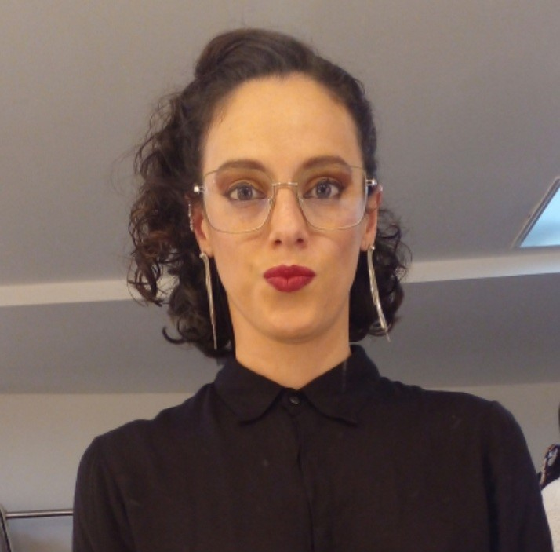

CV de Ana Paula Dutra
Tester Junior
Tester en formación. Gran curiosa por naturaleza. Me he desarrollado de manera independiente por varios años lo que me ha llevado a adquirir diversas herramientas de organización, administración, archivo, trato con los empleados, pares y posibles clientes.
FORMACIÓN ACADÉMICA
- Licenciatura en Danza Contemporánea
- 2021 - 2022 Facultad de Artes - UDELAR
- Licenciatura en Diseño Industrial/Textil
- 2012 - 2014 Facultad de Arquitectura - UDELAR

EXPERIENCIA LABORAL
- Ayudante panadería en Servi Texxa S.R.L.
- Enero 2022 - Noviembre 2022. Atención al cliente, elaboración de alimentos, gestión de proveedores, reposición de góndolas y cámara de frío
- Directora administrativa y doncente en Manía
- 2020-2022. Gestión del espacio, tareas administrativas, selección del equipo docente, organización de grilla, docente de tango, danza clásica, danza para niñes, entre otros
- Comunity Managger
- 2020 - 2022. Elaboración de contenido gráfico para diversas marcas, manejo de redes y páginas web de las mismas
- Encargada de turno - Recepcionista en La Viruta Tango Club
- 2018 - 2020. Atención al cliente, gestión de proveedores, community manager, organización del personal, cajera
FORMACIÓN COMPLEMENTARIA
- Jóvenes a Programar - TESTER JUNIOR - Ceibal - 2022